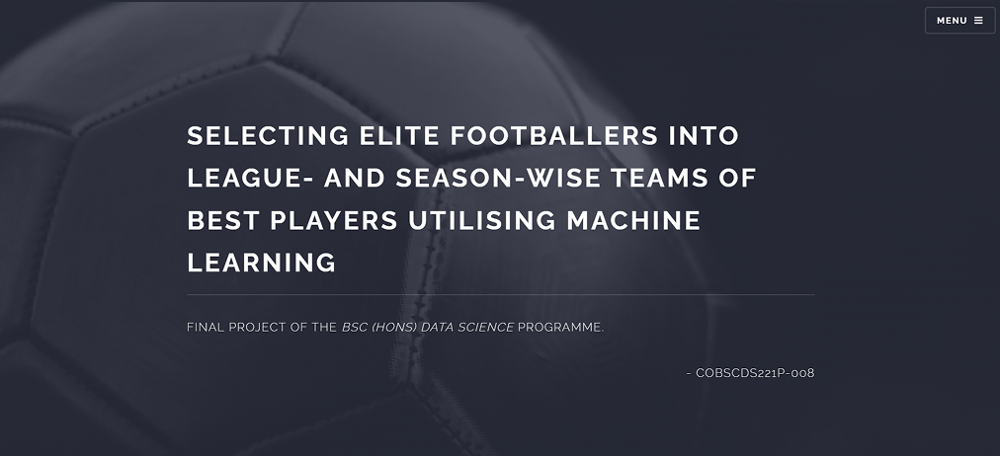

Selecting Elite Footballers into League- and Season-wise Teams of Best Players Utilising Machine Learning
Testing whether machine learning can out-select FIFA's own Team of the Season.

The Problem
FIFA's Team of the Season (FTOTS) is chosen by human vote, and draws regular criticism for being subjective and popularity-driven rather than performance-based. For my final-year BSc (Hons) Data Science project at Coventry University, the goal was to test whether a machine-learning approach could select more objectively performance-aligned squads than the human voting system, across Europe's big five leagues.
FTOTS specifically was chosen as the benchmark to beat because it already has a clear, checkable ground truth: an actual named squad exists for every league-season, voted on by real fans, which makes it possible to score a model's picks against a real-world outcome instead of an abstract performance metric with no external reference point.
How It Was Built
Scrape & Wrangle
I scraped player data across Europe's big five leagues and processed it through wrangling and feature engineering, building the base dataset every downstream model would train on.
Train Four Position-Specific Models
Rather than one general model, I trained four separate classifiers — one each for goalkeepers, defenders, midfielders, and forwards — using historical actual FTOTS selections as ground truth.
Generate Squads
For each league-season, every model generated its top-n players matching the real squad's positional counts, producing a full model-selected XI to set against the human-voted one.
Score Against a Custom Framework
I scored model output using a points framework adapted from the UEFA Champions League fantasy scoring system, utilising a like-for-like comparison.
Compare Across Seasons & Leagues
The comparison ran across multiple historical seasons, spanning all Big Five leagues: Premier League, Bundesliga, La Liga, Serie A, and Ligue 1.
The Outcome
Across the tested seasons, the model-selected squads outscored the human-voted FTOTS squads in a majority of seasons, providing direct evidence that a stats-driven selection process can beat a popularity-influenced voting system on its own scoring terms. The companion site documents the comparison season-by-season and league-by-league, and includes a bonus: an all-time "Best XI" per league, compiled from each league's strongest individual model-selected seasons.